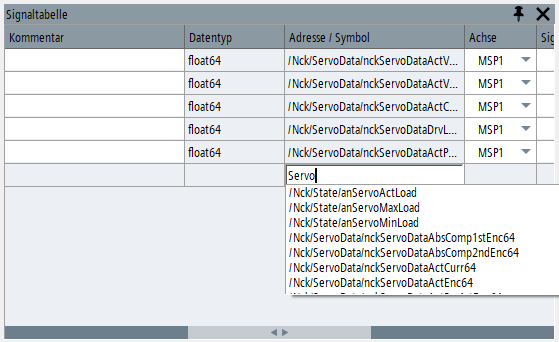
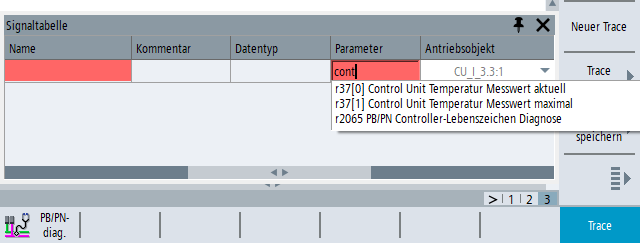
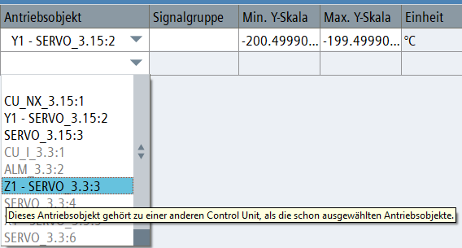

Sie können eine Variable in die Trace-Konfiguration einfügen, indem Sie sie direkt in die Signaltabelle eingeben.
Öffnen Sie die Signaltabelle über den Softkey "Signaltabelle" oder klicken Sie in der Symbolleiste auf das Symbol für "Signaltabelle".
Geben Sie den bekannten Teil der Variablenadresse in die Spalte "Adresse / Symbol" der Signaltabelle ein.
Eine Auto-Vervollständigungsliste schlägt Namen der unterstützten Variablen vor, die die eingegebenen Zeichen enthalten. Dabei muss auf Groß- und Kleinschreibung nicht geachtet werden.
Wählen Sie über die Auto-Vervollständigungsliste die gewünschte Variable aus.
Bestätigen Sie die Eingabe mit der Eingabetaste oder der Taste <INPUT> und wählen Sie für die Variable die Parameter aus.
In der Signaltabelle ist das Feld "Antriebsobjekt" bearbeitbar. Es enthält eine Klappliste mit allen an der Maschine vorhandenen Antriebsobjekten.
Wählen Sie das gewünschte Objekt aus der Liste aus.
Die Felder "Parameter" und "Name" sind jetzt bearbeitbar.
Geben Sie in das entsprechende Datenfeld die Parameternummer bzw. einen bekannten Teil des Parameternamens ein, und wählen Sie in der Auto-Vervollständigungsliste den erforderlichen Parameter aus.
Die Auto-Vervollständigungsliste enthält die nachverfolgbaren Parameter des ausgewählten Antriebsobjekts. In der Liste wird nach den in die Signaltabelle eingegebenen Zeichen gesucht (ohne Beachtung von Groß- und Kleinschreibung).
| Hinweis |
Der Parameter kann nach Auswahl nicht mehr geändert werden. Das Antriebsobjekt ist weiterhin bearbeitbar und kann in ein anderes Antriebsobjekt desselben Typs geändert werden. Wird jedoch bei einem Signal mit Messdaten das Antriebsobjekt geändert, werden dessen Daten im Trace-Diagramm gelöscht. |
Alle Antriebsobjekte in der Konfiguration müssen zur selben Control Unit gehören. Solange eine neue Trace-Konfiguration keine Variable enthält, werden in der Klappliste für das "Antriebsobjekt" alle Objekte in schwarz angezeigt. Sobald das erste Antriebsobjekts ausgewählt ist, wird die Control Unit der Konfiguration festgelegt. Antriebsobjekte, die zu einer anderen Control Unit gehören, werden in der Liste grau dargestellt. Ein Tool-Tipp zeigt Ihnen den entsprechenden Hinweis.
| Hinweis |
Die grau dargestellten Objekte sind auswählbar. Wenn Sie ein graues Objekt auswählen, werden alle bereits ausgewählten Antriebsobjekte in der Konfiguration ungültig. Bestätigen Sie die Popup-Meldung, um diese Änderung durchzuführen. |